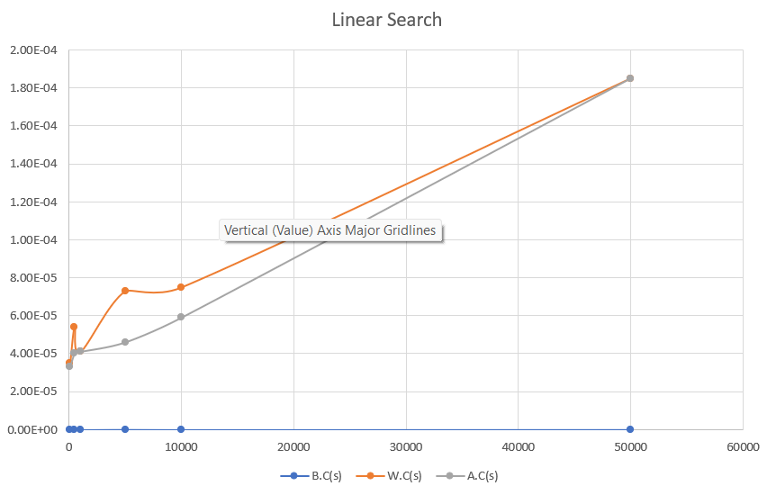
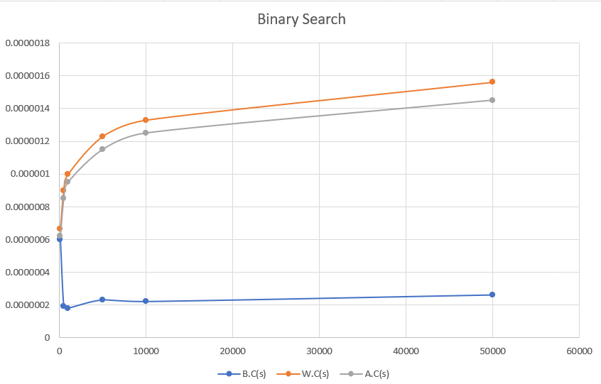
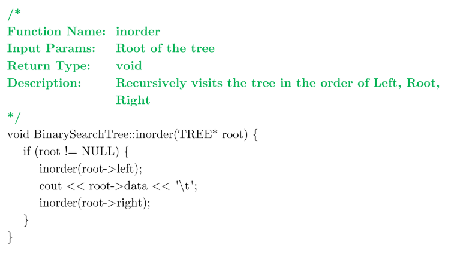
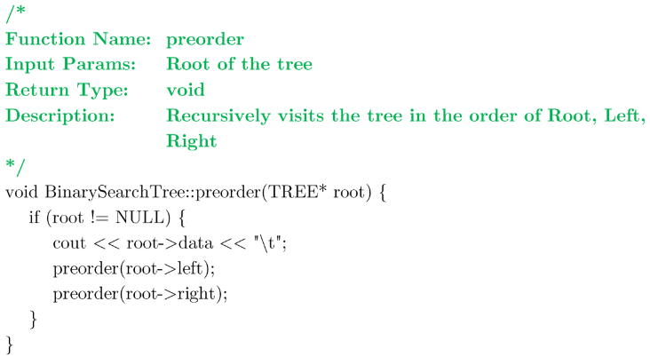
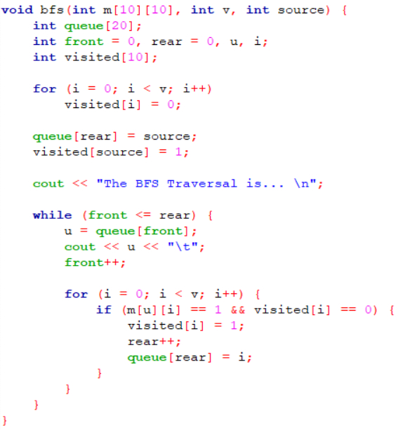
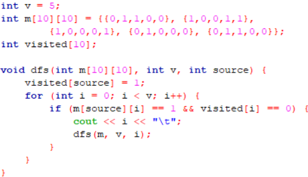
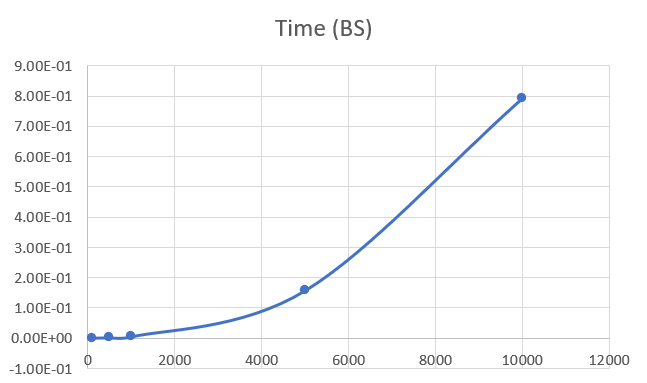
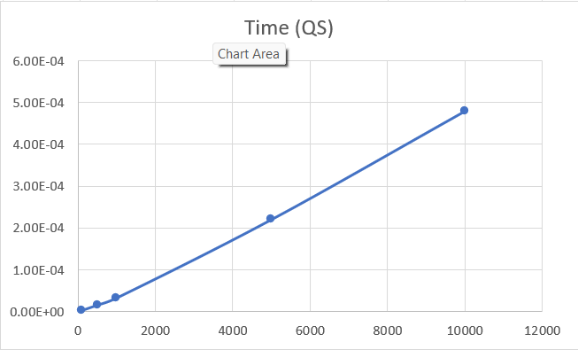
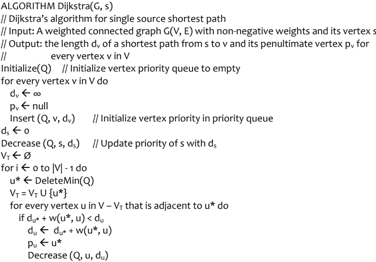
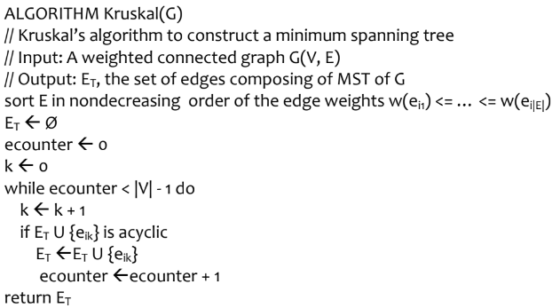

My Reflections
Time Complexity
Time complexity is a way to measure how the runtime of an algorithm grows as the input size increases.
It is represented using Big-O notation, which describes the upper bound of the algorithm's growth rate.
This concept is crucial in understanding and designing efficient algorithms.
During the lab, I learnt to plot the graphs for algorithms (Linear search, Binary search) for their Best, Average & Worst cases. This helped me in improving my understanding of Big-O, omega & theta notations


Binary Search Tree
During the labe we were given an activity to perform various operations on a Tree. This activity introduced me to in-depth concepts of Tree like (Inorder Traversal, Preorder Traversal & Postorder Traversal)


BFS & DFS
There was a Lab activity were we were asked to trace the BFS and DFS algorithms and also manually write the traversals. The tracing of these algorithms felt difficult but it helped me in undrstang how exactly the program of BFS and DFS works.


Sorting Algorithms
There was a Lab activity where we were asked to trace the QuickSort algorithm for the given input and then we were asked to plot the graph for two sorting algorithms. This improved my understanding of time-complexities of various sorting algorithms


Graph Algorithms
There was a Lab activity where we were asked to trace the Dijkhtra's algorithm and Kruskal's algorithm for the given input. This activity helped me in understanding these graph algorithms and also introduced me to the concept of greedy technique.This helped in analyzing the program for the shortest path algorithms


Challenges in Understanding DAA Concepts in Real-World Situations
- DSA concepts are often taught in a very theoretical way, focusing on math, time and space analysis, and ideal situations.
- It’s hard to connect these theories to real-world systems and situations.
- Textbook problems and coding challenges usually simplify real-world problems and leave out important details.
- This makes it hard to know how to use DSA solutions in complex, real-life situations with many different factors.
- Real-world problems often have complicated systems with many factors that aren’t clearly stated in typical DSA problems.
- To solve these problems, we need a better understanding of the real-world systems and how they work.
Challenges in Using DAA Concepts in Real-Life Problems
Challenges when solving a difficult problem:
- Understand the Problem Well
- Define the Problem: Clearly describe the problem, including what inputs, outputs, and restrictions are involved.
- Identify Goals: Figure out what the main goals are. Is it speed, efficiency, scalability, or something else?
- Consider Restrictions: Think about any limits, such as memory, time, or hardware requirements.
- Look at Possible Solutions
- Brainstorm: List all possible approaches or algorithms that might work for the problem.
- Consider Common Approaches:
- Divide and Conquer: Break the problem into smaller parts. (e.g., Merge Sort, Quick Sort)
- Greedy Algorithms: Make the best choice at each step to solve the problem. (e.g., Dijkstra's Algorithm)
- Dynamic Programming: Break the problem into smaller problems, solve them, and save the results to avoid repeating the work.
- Backtracking: Try all possible solutions one by one and go back if something doesn't work. (e.g., N-Queens problem)
- Check Existing Solutions: See if others have solved similar problems and if there are ready-made algorithms or libraries to use.
- Analyze and Evaluate
- Time and Space Complexity: Check how much time and memory each solution takes, considering the worst and average cases.
- Compare Trade-offs: Think about the trade-offs between different solutions, such as performance, memory usage, and ease of use.
- Prototype and Test: Try building prototypes of the best solutions and test them with sample data.